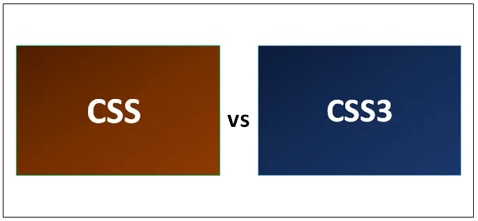
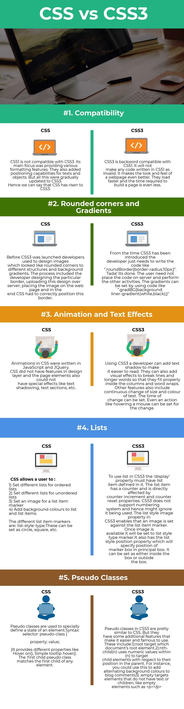

Разница между CSS и CSS3

Веб-приложения играют очень важную роль в современном мире. Интернет, занимающий почти все, нуждается в дизайнерских веб-страницах. Пользователи должны быть привлечены к определенным веб-страницам, чтобы к ним обращались больше. Следовательно, роль каскадных таблиц стилей (CSS) очень важна. CSS работает вместе с HTML и обеспечивает базовый стиль и структуру. Он определяет, как элементы HTML будут выглядеть на веб-странице. CSS3 - это последняя версия CSS. Это обеспечивает JavaScript как возможности. В дополнение к этому, он также предоставляет функции мобильной разработки. Он также имеет дополнительные функции, такие как изображения, градиент, переход и т. Д. Давайте посмотрим на разницу между CSS и CSS3
Сравнение лицом к лицу между CSS и CSS3 (Инфографика)
Ниже приведено 5 главных отличий CSS от CSS3
Ключевая разница между CSS и CSS3
Оба CSS являются популярным выбором на рынке; Давайте обсудим некоторые основные различия между CSS и CSS3:
- Основное различие между CSS и CSS3 заключается в том, что в CSS3 есть модули. CSS является базовой версией и не поддерживает адаптивный дизайн. CSS3, с другой стороны, является последней версией и поддерживает адаптивный дизайн.
- CSS нельзя разбить на модули, но CSS3 можно разбить на модули. Быть старой версией CSS медленнее, чем CSS3.
- В дополнение к этим CSS3 имеет много функций выравнивания. CSS3 предоставляет инструмент для изменения размеров ячеек, который позволяет пользователю получить правильный размер любого элемента без каких-либо изменений в размерах или заполнении элемента. CSS не имеет какого-либо инструмента для определения размера блоков, и поэтому пользователю необходимо использовать стандартные процедуры, определенные для выравнивания текста.
- Анимации и 3D-преобразования лучше в CSS3. Элементы можно перемещать по экрану с помощью flash и JavaScript. Используя это, элементы также смогут менять свой размер и цвет. Все виды переходов, преобразований и анимаций могут быть выполнены с использованием CSS3. CSS не предоставляет 3D анимацию и преобразования.
- CSS предоставляет базовую цветовую схему и стандартные цвета. CSS3 поддерживает цвета RGBA, HSLA, HSL и градиент. Он также поддерживает закругленные углы изображения для текстовых полей.
- Многоколонные текстовые блоки могут быть определены в CSS3. CSS поддерживает только отдельные текстовые блоки.
CSS против CSS3 Сравнительная таблица
Основное сравнение между CSS и CSS3 обсуждается ниже:
| Основа сравнения между CSS и CSS3 | CSS | CSS3 |
| Совместимость | CSS не совместим с CSS3. Основное внимание было уделено предоставлению различных функций форматирования. Они также добавили возможности позиционирования для текстов и объектов. Но все это постепенно обновлялось до CSS3. Следовательно, мы можем сказать, что CSS вырос до CSS3. | CSS3 обратно совместим с CSS1. Это не сделает любой код, написанный на CSS1, недействительным. Это делает внешний вид веб-страницы еще лучше. Они загружаются быстрее, а время, необходимое для создания страницы, еще меньше. |
| Закругленные углы и градиенты | Перед запуском CSS3 разработчики разрабатывали изображения, которые выглядели как закругленные углы для различных структур и фоновых градиентов. Процесс включал в себя разработку разработчиком конкретной границы, загрузку этого дизайна на сервер, размещение изображения на веб-странице, и в конце CSS должен был правильно расположить эту границу. | С момента появления CSS3 разработчику просто нужно написать код вроде «.roundBorder (border-radius: 10px;)». Тада! Это сделано. Пользователю не нужно размещать код на сервере и в ыполнять другие действия. Градиенты могут быть установлены с помощью кода, подобного «.gradBG (background: liner-Gradient (white, black);)» |
| Анимация и текстовые эффекты | Анимации в CSS были написаны на JavaScript и JQuery. У CSS не было функций в слое дизайна, а элементы страницы также не могли иметь специальных эффектов, таких как затенение текста, текстовые разделы и т. Д. | Используя CSS3, разработчик может добавить тень текста, чтобы его было легче читать. Они также могут добавлять визуальные эффекты для разбиения строк и более длинных слов, чтобы они правильно помещались внутри столбцов и переносов слов. Другие функции также включают в себя непрерывное изменение размера и цвета текста. Время изменения может быть установлено. Даже действие, такое как наведение мыши, может быть изменено. |
| Списки |
CSS позволяет пользователю:
Они могут быть установлены как круг, квадрат и т. Д. |
Чтобы использовать список в CSS3, свойство display должно иметь определенный элемент списка. Элемент списка имеет счетчик и напрямую зависит от свойств приращения счетчика и сброса счетчика. CSS3 не поддерживает систему нумерации и, следовательно, может игнорировать ее использование. Свойство image стиля списка в CSS3 позволяет установить изображение на маркер элемента списка. Как только изображение станет доступным, оно будет установлено в виде маркера типа списка. У этого также есть свойство позиции стиля списка, которое укажет положение маркера в главном блоке. Его можно установить как внутри, так и вне коробки. |
| Псевдо-классы |
Псевдоклассы используются для специального определения состояния элемента. Синтаксис: селектор: псевдокласс ( стоимость имущества; ) Он предоставляет различные свойства, такие как Hover on (), всплывающая подсказка Simple (). Псевдокласс: first-child соответствует первому дочернему элементу любого элемента. |
Псевдоклассы в CSS3 очень похожи на CSS. Но у них есть некоторые дополнительные функции,
которые делают его более простым
и известным в использовании.
Это включает:
|
Вывод - CSS против CSS3
Вышеуказанная разница между CSS и CSS3 показывает, как CSS постепенно превращается в CSS3. Плавные переходы, чистый дизайн и более быстрая работа привели CSS к тому месту, где он находится сегодня. CSS можно использовать для разработки любых веб-приложений. CSS3 теперь поддерживает все браузеры и, следовательно, используется повсеместно. Со временем CSS4 скоро будет представлен. До этого CSS3 был доступен для всех текущих пользователей с небольшими улучшениями в существующей структуре. Таким образом, каскадная таблица стилей останется в индустрии программного обеспечения и поможет пользователям создавать интерактивные и самые стильные веб-приложения и страницы.